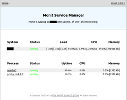

Monit
Dieser Artikel wurde für die folgenden Ubuntu-Versionen getestet:
Ubuntu 14.04 Trusty Tahr
Zum Verständnis dieses Artikels sind folgende Seiten hilfreich:
Monit  ist ein einfaches, aber effektives Programm zur Überwachung von Serverdiensten, kann aber auch wichtige Basisdaten wie CPU-Nutzung, Festplattenbelegung usw. einbeziehen. Falls ein Serverdienst ausfällt, kann er automatisch neu gestartet werden. Bei Problemen wird der Systemverwalter per E-Mail informiert. Zusätzlich gibt es eine kleine Status-Webseite. Die gleichen Funktionen, aber mit einer aufwendigeren grafischen Web-Oberfläche versehen, bietet Munin (welches aber keinen integrierten Webserver enthält). Eine Alternative kann z.B. Monitorix sein, für das Fremdpakete angeboten werden.
ist ein einfaches, aber effektives Programm zur Überwachung von Serverdiensten, kann aber auch wichtige Basisdaten wie CPU-Nutzung, Festplattenbelegung usw. einbeziehen. Falls ein Serverdienst ausfällt, kann er automatisch neu gestartet werden. Bei Problemen wird der Systemverwalter per E-Mail informiert. Zusätzlich gibt es eine kleine Status-Webseite. Die gleichen Funktionen, aber mit einer aufwendigeren grafischen Web-Oberfläche versehen, bietet Munin (welches aber keinen integrierten Webserver enthält). Eine Alternative kann z.B. Monitorix sein, für das Fremdpakete angeboten werden.
Ursprünglich für einen einzelnen Server gedacht, gibt es mit M/Monit auch eine kommerzielle Variante, die mehrere Server gleichzeitig (unter einer Oberfläche) überwachen kann.
Installation¶
 Folgendes Paket muss installiert [1] werden:
Folgendes Paket muss installiert [1] werden:
monit (universe)
 mit apturl
mit apturl
Paketliste zum Kopieren:
sudo apt-get install monit
sudo aptitude install monit
Konfiguration¶
Damit Monit beim Systemstart automatisch startet, muss in der Datei /etc/default/monit der Eintrag
startup=1
vorgenommen werden [2].
Das Programm wird mittels der Datei /etc/monit/monitrc konfiguriert. Obwohl diese Datei prinzipiell selbsterklärend ist und viele Beispiele enthält, hier ein auf das wesentliche verkürztes Muster (überwacht werden die Dienste Apache, MySQL, PostgreSQL und sshd):
## Monit settings
set daemon 120
set logfile syslog facility log_daemon
set mailserver server.domain.topleveldomain
set alert user@domain.topleveldomain # user will be informed via mail
set httpd port 2812 and
allow admin:monit # require user ‘admin’ with password ‘monit’
## Monitoring Apache2 Service
start program = "/etc/init.d/apache2 start"
stop program = "/etc/init.d/apache2 stop"
## Admin will notify by mail if below of the condition satisfied.
if loadavg(5min) greater than 10 for 8 cycles then stop
if 3 restarts within 5 cycles then timeout
group server
## Monitoring MySQL Service
check process mysql with pidfile /var/run/mysqld/mysqld.pid
group database
start program = "/etc/init.d/mysql start"
stop program = "/etc/init.d/mysql stop"
if failed host 127.0.0.1 port 3306 then restart
if 5 restarts within 5 cycles then timeout
## Monitoring PostgreSQL Service
check process postgresql-8.3 with pidfile /var/run/postgresql/8.3-main.pid
group database
start program = "/etc/init.d/postgresql-8.3 start"
stop program = "/etc/init.d/postgresql-8.3 stop"
if failed host 127.0.0.1 port 5432 then restart
if 5 restarts within 5 cycles then timeout
## Monitoring ssh Service
check process sshd with pidfile /var/run/sshd.pid
start program "/etc/init.d/ssh start"
stop program "/etc/init.d/ssh stop"
if failed port 22 protocol ssh then restart
if 5 restarts within 5 cycles then timeoutMit dem Befehl [3]:
sudo monit -t
wird die Konfigurationsdatei auf Fehler überprüft. Sind keine Fehler enthalten, erhält man folgende Rückmeldung:
Control file syntax OK
Weitere Hilfe erhält man mit der Manpage zu Monit.
Benutzung¶
 Monit selbst wird wie jeder andere Dienst verwaltet. Zum Starten direkt nach der Installation und Konfiguration dient der Befehl:
sudo /etc/init.d/monit start
Besonders praktisch ist neben der Benachrichtigung per E-Mail die Möglichkeit, eine Status-Webseite über einen integrierten Mini-Webserver abzurufen: http://SERVER-IP_ODER_NAME:2812
Beim Zugriff muss man sich mit den in der Konfigurationsdatei hinterlegten Benutzerdaten authentifizieren. Die Webseite aktualisiert sich alle 3 Minuten automatisch. Einzelne Dienste ("Process") können darüber bei Bedarf auch manuell (neu) gestartet, gestoppt oder deaktiviert werden.
Bei einem Server, dessen Status über das Internet abgefragt werden soll, ist SSL-Verschlüsselung Pflicht! Ein "self-signed"-Zertifikat kann man sich mit ssl-cert erzeugen, die Einbindung zeigt der Artikel Enable SSL In Monit im Monit-Wiki.
Problembehebung¶
E-Mail Versand¶
Bevor es Enttäuschungen gibt: viele E-Mail Provider blockieren die Annahme von Nachrichten nicht vertrauenswürdiger Absender. Dies ist leider im Spam-Zeitalter üblich und kein Problem von Monit. Bei GMX, Web.de & Co. sollte daher die eigene E-Mail Adresse als Absender und Empfänger verwendet werden.
Links¶
Wiki
- FAQ, How-Tos und Konfigurationsbeispiele für verschiedene DiensteUsing monit with Ubuntu Server
- Monit und UpstartInstall monit from source on Ubuntu
- Monit aus dem Quelltext übersetzenNetzwerk-Monitoring
 Programmübersicht
Programmübersicht
- Erstellt mit Inyoka
-
 2004 – 2017 ubuntuusers.de • Einige Rechte vorbehalten
2004 – 2017 ubuntuusers.de • Einige Rechte vorbehalten
Lizenz • Kontakt • Datenschutz • Impressum • Serverstatus -
Serverhousing gespendet von